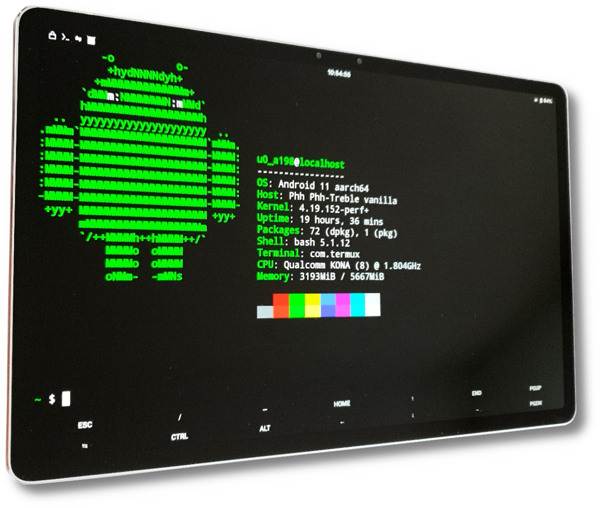

Lenovo Xiaoxin Pad Pro 2021 (lenovo-j716f)
The Lenovo Xiaoxin Pad Pro 2021 is a high-end Android tablet released only in China. Other unofficial names for this tablet are Lenovo P11 Pro Plus or Lenovo P11 Pro 2021. Lenovo has not released the downstream Linux kernel sources for this device.
|
 Lenovo Xiaoxin Pad Pro 2021 running LineageOS 18.1 GSI with Termux open showing neofetch | |
| Manufacturer | Lenovo |
|---|---|
| Name | Xiaoxin Pad Pro 2021 |
| Codename | lenovo-j716f |
| Released | 2021 |
| Category | testing |
| Original software | Android |
| Original version | 12 (ZUI 14) |
| Hardware | |
| Chipset | Qualcomm Snapdragon 870 (SM8250-AC) |
| CPU | Octa-core (1x3.2 GHz Kryo 585 & 3x2.42 GHz Kryo 585 & 4x1.80 GHz Kryo 585) |
| GPU | Adreno 650 |
| Display | 2560 x 1600 (90Hz 11.5" OLED) |
| Storage | 128 GB |
| Memory | 6 GB LPDDR4X |
| Architecture | aarch64 |
| Type | tablet |
{kind=link}
| USB Networking |
Works
|
|---|---|
| Flashing |
Works
|
| Touchscreen | |
| Display |
Partial
|
| WiFi | |
| FDE | |
| Mainline |
Works
|
| Battery |
Partial
|
| 3D Acceleration | |
| Audio | |
| Bluetooth | |
| Camera | |
| GPS |
Unavailable
|
| Mobile data |
Unavailable
|
| SMS |
Unavailable
|
| Calls |
Unavailable
|
| USB OTG | |
| NFC |
Unavailable
|
| Accelerometer | |
|---|---|
| Magnetometer | |
| Ambient Light | |
| Proximity | |
| Hall Effect | |
| Barometer |
Unavailable
|
| Power Sensor |
Unavailable
|
| Camera Flash | |
|---|---|
| Keyboard | |
| Touchpad | |
| USB-A |
Unavailable
|
| HDMI/DP | |
| Ir TX |
Unavailable
|
| Ir RX |
Unavailable
|
| Stylus |
Partial
|
| Haptics | |
| Ethernet |
Unavailable
|
| FOSS bootloader |
Unavailable
|
Contents
Contributors
Users owning this device
- Ungeskriptet (Notes: stupid dual dsi)
How to enter flash mode
- EDL Mode: Hold down Volume Up, then connect the tablet to a computer with a USB cable.
- Fastboot Mode: Power on the device with both Power and Volume Down buttons.
- Recovery Mode: Boot into Fastboot mode and select recovery using the Volume/Power buttons.
Unlocking the bootloader
| Note: You have to wait at least a day after initially connecting to the Internet for Lenovo to process your serial number. |
- Go to Settings → My Device, tap on ZUI Version until developer settings are enabled.
- Go to General Settings → Developer Settings and enable "OEM Unlocking".
- Boot into fastboot mode and connect it to a PC
- Take note of the serial number shown on the bootloader screen.
- Download your
sn.imgfrom http://cdn.zui.lenovomm.com/developer/tabletboot/(your_sn_number)/sn.img (Replace the brackets with your serial number in the link) - Flash your
sn.imgwithfastboot flash unlock sn.img. - Unlock the bootloader with
fastboot oem unlock-go
Alternatively this page can also be used to get the sn.img.
Alternative method
This method can be used to unlock the bootloader without having to wait and connect to Lenovo's server. It works by modifying the serial number with EDL and using a pre-made unlock file for that serial number.
EDL Mode
The necessary loader for bkerler's EDL tool can be found in this firmware file (prog_firehose_ddr.elf).
Installation
/* Not yet */
Mainline
A work in progress mainline kernel is being developed here.
Mainline status
| Component | Model | Status | Notes |
|---|---|---|---|
| SoC | Qualcomm SM8250-AC Snapdragon 870 | Y | |
| USB | USB Type-C 3.1 | P | Peripheral mode only |
| UFS | Kioxia THGJFAT0T44BAILB | Y | |
| SD card | sdhc_2 | N | |
| Display | EDO (EverDisplay Optronics) E350911(?) OLED panel; Raydium RM69380 driver IC | P | Dual DSI, Panel driver in progress |
| Touchscreen | Goodix GT738X (GT7386 according to cfg file) | P | |
| Pen input | Y | Compatible with some MS Surface pens | |
| Touchpad | hid-over-i2c (Available through detachable keyboard only) | N | i2c Address 0x60 |
| Keyboard | N | i2c Address 0x61 | |
| Charging | Qualcomm SMB1390 | N | |
| Buttons | GPIO | Y | |
| USB-C Redriver | onsemi NB7VPQ904M redriver | N | Needed to get DP Alt mode working |
| Fuel gauge | Texas Instruments bq27541 | Y | |
| Ambient light sensor | Lite-On LTR-308 | N | |
| Time-of-flight sensor | AMS (Austria Mikro Systeme) TMF8801 | N | |
| Magnetometer | AKM ak0991x | N |
i2c Table
Android messes up the i2c numbering. This is the real i2c numbering corresponding to mainline, showing only those that have devices attached.
| Real | Android | Address |
|---|---|---|
| i2c1 | i2c5 | 0x984000 |
| i2c3 | i2c6 | 0x98c000 |
| i2c4 | i2c2 | 0x990000 |
| i2c13 | i2c7 | 0xa94000 |
| i2c15 | i2c4 | 0x884000 |
Back to stock firmware
Linux tutorial:
- Enter EDL Mode by powering off the tablet first, then hold Volume Up while connecting the tablet to a computer with an USB cable.
- Download the qdl tool from here and build it. Arch Linux users can simply install the qdl AUR package.
- Download the firmware from here.
- Extract the ZIP file.
- cd into the extracted ZIP directory
- Execute the following command:
qdl --storage ufs --include ./ ./prog_firehose_ddr.elf ./rawprogram0.xml ./patch0.xml ./rawprogram1.xml ./patch1.xml ./rawprogram2.xml ./patch2.xml ./rawprogram3.xml ./patch3.xml ./rawprogram4.xml ./patch4.xml ./rawprogram5.xml ./patch5.xml ./rawprogram_unsparse0_fullupgrade.xml - After it has finished, the command will exit itself. Force reboot the tablet by holding Power. Now you should be able to boot back into stock firmware.
See also
- GSMArena page
- Device specifications
- EDK2 UEFI bootloader
- Firmware archive
- TWRP recovery image (twrp-3.7.0_12-0-p11_pro_plus.img)